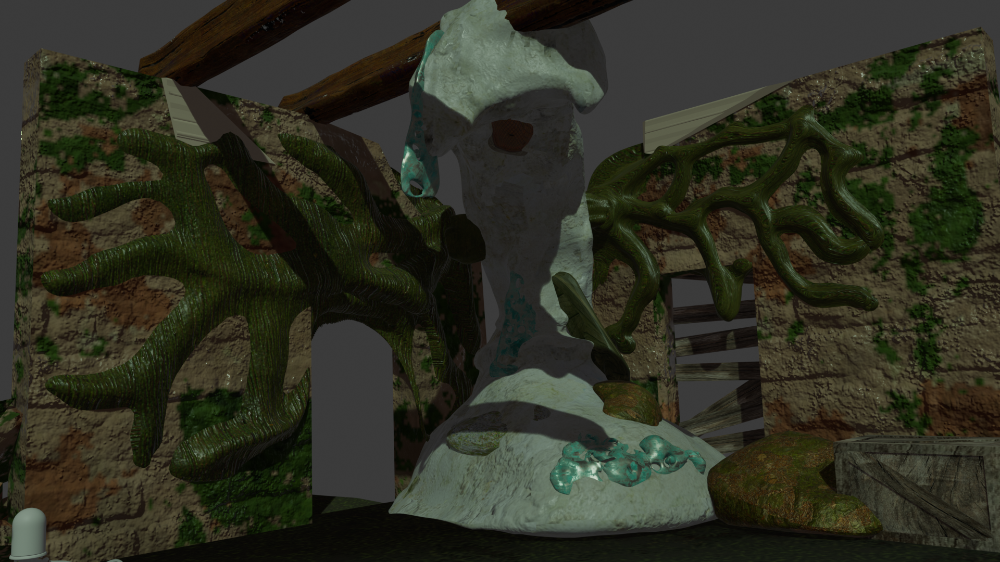
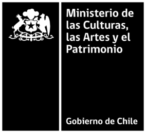
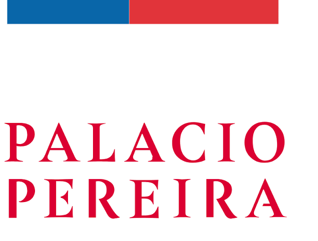
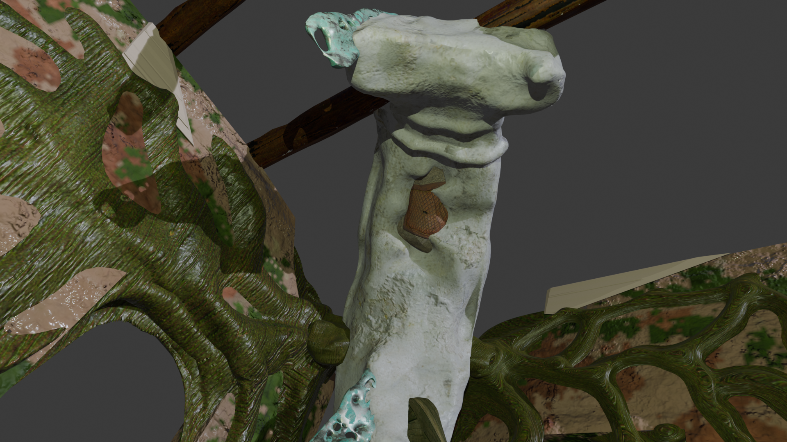
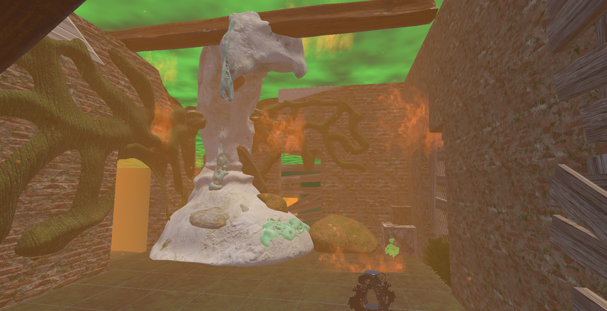
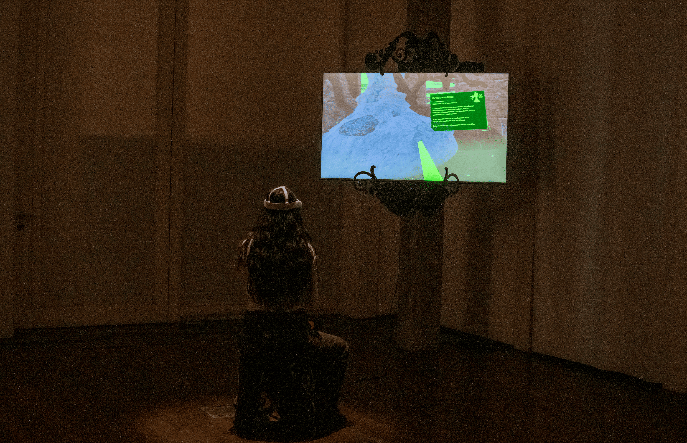

Sinopsis
Año 2126... 100 Años de la liberacion de AlbedoX. Las estructuras cambiaron... o se fusionaron? y la vida humana fue obligada a retroceder. Tu labor como Arqueologo es recopilar la mayor informacion posible para saber que produjo este Quimico Liberado y como aminorar los efectos del desastre. ¡Pero cuidado! tienes poco tiempo...



En que se basa
La muestra esta referida al Palacio Pereira, en el cual despues de un desastre, vuelve nuevamente a estar en ruinas. Con Arquitectura Blanda, a traves de Sedimentos, seres Geo-Vivos y mucha suerte, deberas recuperar muestras de los 100 años que transcurrieron desde ese fatidico dia.

¿Mi Labor?
El Rol Que cumpli fue crear a base de Sedimentos y ornamentos, uno de los Dos seres que encontraras a lo largo de la Experiencia. Con Modelado 3D, Esculpido, Retopologia, Texturizado, Optimizacion de Mesh. Se logro Entregar un ser tenebroso, imponente y unico, para una gran experiencia.

Experiencia en Realidad Virtual
Es una Experiencia en VR disponible en el Palacio Pereira. Realizada en el tramo de Abril de 2026 a Agosto del mismo año. En conjunto con un equipo capaz y la guia Valentina Maldonado "oyevalentina.com".